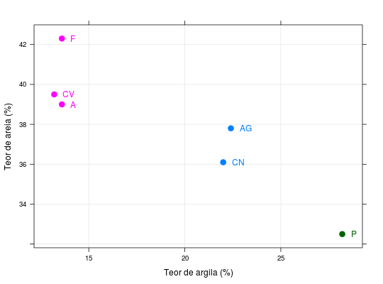

Os dados referem-se a média de vários pontos amostrais em sistema de gride nos solos da Amazônia, onde foram mensuradas as variáveis areia e argila para 6 sistemas de uso da terra (SUT). O objetivo do estudo é agrupar os SUT's conforme similaridade das medidas de areia e argila.
Um data.frame com 6 observações e 2 variáveis, em que
areiaargilaO sistema de uso da terra é indicado conforme nomenclatura das
linhas do data.frame, onde (A) representa uso da terra
para agricultura, (AG) para agrofloresta, (F) para floresta, (CV)
para capoeira velha, (CN) para capoeira nova e (P) para pastagem.
FERREIRA (2011), (Exemplo 9.1, pág. 402)
data(FerreiraEg9.1)#> Warning: data set ‘FerreiraEg9.1’ not foundstr(FerreiraEg9.1)#> 'data.frame': 6 obs. of 2 variables: #> $ areia : num 13.6 22.4 13.6 13.2 22 28.2 #> $ argila: num 39 37.8 42.3 39.5 36.1 32.5rownames(FerreiraEg9.1)#> [1] "A" "AG" "F" "CV" "CN" "P"(D <- dist(FerreiraEg9.1))#> A AG F CV CN #> AG 8.8814413 #> F 3.3000000 9.8838252 #> CV 0.6403124 9.3557469 2.8284271 #> CN 8.8865066 1.7464249 10.4403065 9.4339811 #> P 15.9815519 7.8568442 17.5840837 16.5529454 7.1693793plot(hclust(D), hang = -1)library(lattice) (cl <- kmeans(FerreiraEg9.1, 3))#> K-means clustering with 3 clusters of sizes 2, 3, 1 #> #> Cluster means: #> areia argila #> 1 22.20000 36.95000 #> 2 13.46667 40.26667 #> 3 28.20000 32.50000 #> #> Clustering vector: #> A AG F CV CN P #> 2 1 2 2 1 3 #> #> Within cluster sum of squares by cluster: #> [1] 1.525000 6.433333 0.000000 #> (between_SS / total_SS = 96.8 %) #> #> Available components: #> #> [1] "cluster" "centers" "totss" "withinss" "tot.withinss" #> [6] "betweenss" "size" "iter" "ifault"xyplot(argila ~ areia, groups = cl$cluster, data = FerreiraEg9.1, pch = 19, cex = 1.3, grid = TRUE, xlab = "Teor de argila (%)", ylab = "Teor de areia (%)", panel = function(x, y, ...) { cols <- trellis.par.get()$superpose.symbol$col[cl$cluster] panel.xyplot(x, y, ...) ltext(x, y, labels = rownames(FerreiraEg9.1), pos = 4, offset = 1, col = cols) })